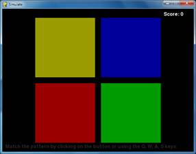

Simulate is a clone of the game Simon. There are four colored buttons on the screen. The buttons light up in a certain random pattern, and then the player must repeat this pattern by pressing the buttons in the correct order. Each time the player successfully simulates the pattern, the pattern gets longer. The player tries to match the pattern for as long as possible.
This source code can be downloaded from http://invpy.com/simulate.py. If you get any error messages, look at the line number that is mentioned in the error message and check your code for any typos. You can also copy and paste your code into the web form at http://invpy.com/diff/simulate to see if the differences between your code and the code in the book.
You can download the four sound files that this program uses from:
1. # Simulate (a Simon clone)
2. # By Al Sweigart al@inventwithpython.com
3. # http://inventwithpython.com/pygame
4. # Creative Commons BY-NC-SA 3.0 US
5.
6. import random, sys, time, pygame
7. from pygame.locals import *
8.
9. FPS = 30
10. WINDOWWIDTH = 640
11. WINDOWHEIGHT = 480
12. FLASHSPEED = 500 # in milliseconds
13. FLASHDELAY = 200 # in milliseconds
14. BUTTONSIZE = 200
15. BUTTONGAPSIZE = 20
16. TIMEOUT = 4 # seconds before game over if no button is pushed.
17.
18. # R G B
19. WHITE = (255, 255, 255)
20. BLACK = ( 0, 0, 0)
21. BRIGHTRED = (255, 0, 0)
22. RED = (155, 0, 0)
23. BRIGHTGREEN = ( 0, 255, 0)
24. GREEN = ( 0, 155, 0)
25. BRIGHTBLUE = ( 0, 0, 255)
26. BLUE = ( 0, 0, 155)
27. BRIGHTYELLOW = (255, 255, 0)
28. YELLOW = (155, 155, 0)
29. DARKGRAY = ( 40, 40, 40)
30. bgColor = BLACK
31.
32. XMARGIN = int((WINDOWWIDTH - (2 * BUTTONSIZE) - BUTTONGAPSIZE) / 2)
33. YMARGIN = int((WINDOWHEIGHT - (2 * BUTTONSIZE) - BUTTONGAPSIZE) / 2)
34.
35. # Rect objects for each of the four buttons
36. YELLOWRECT = pygame.Rect(XMARGIN, YMARGIN, BUTTONSIZE, BUTTONSIZE)
37. BLUERECT = pygame.Rect(XMARGIN + BUTTONSIZE + BUTTONGAPSIZE, YMARGIN, BUTTONSIZE, BUTTONSIZE)
38. REDRECT = pygame.Rect(XMARGIN, YMARGIN + BUTTONSIZE + BUTTONGAPSIZE, BUTTONSIZE, BUTTONSIZE)
39. GREENRECT = pygame.Rect(XMARGIN + BUTTONSIZE + BUTTONGAPSIZE, YMARGIN + BUTTONSIZE + BUTTONGAPSIZE, BUTTONSIZE, BUTTONSIZE)
40.
41. def main():
42. global FPSCLOCK, DISPLAYSURF, BASICFONT, BEEP1, BEEP2, BEEP3, BEEP4
43.
44. pygame.init()
45. FPSCLOCK = pygame.time.Clock()
46. DISPLAYSURF = pygame.display.set_mode((WINDOWWIDTH, WINDOWHEIGHT))
47. pygame.display.set_caption('Simulate')
48.
49. BASICFONT = pygame.font.Font('freesansbold.ttf', 16)
50.
51. infoSurf = BASICFONT.render('Match the pattern by clicking on the button or using the Q, W, A, S keys.', 1, DARKGRAY)
52. infoRect = infoSurf.get_rect()
53. infoRect.topleft = (10, WINDOWHEIGHT - 25)
54. # load the sound files
55. BEEP1 = pygame.mixer.Sound('beep1.ogg')
56. BEEP2 = pygame.mixer.Sound('beep2.ogg')
57. BEEP3 = pygame.mixer.Sound('beep3.ogg')
58. BEEP4 = pygame.mixer.Sound('beep4.ogg')
59.
60. # Initialize some variables for a new game
61. pattern = [] # stores the pattern of colors
62. currentStep = 0 # the color the player must push next
63. lastClickTime = 0 # timestamp of the player's last button push
64. score = 0
65. # when False, the pattern is playing. when True, waiting for the player to click a colored button:
66. waitingForInput = False
67.
68. while True: # main game loop
69. clickedButton = None # button that was clicked (set to YELLOW, RED, GREEN, or BLUE)
70. DISPLAYSURF.fill(bgColor)
71. drawButtons()
72.
73. scoreSurf = BASICFONT.render('Score: ' + str(score), 1, WHITE)
74. scoreRect = scoreSurf.get_rect()
75. scoreRect.topleft = (WINDOWWIDTH - 100, 10)
76. DISPLAYSURF.blit(scoreSurf, scoreRect)
77.
78. DISPLAYSURF.blit(infoSurf, infoRect)
79.
80. checkForQuit()
81. for event in pygame.event.get(): # event handling loop
82. if event.type == MOUSEBUTTONUP:
83. mousex, mousey = event.pos
84. clickedButton = getButtonClicked(mousex, mousey)
85. elif event.type == KEYDOWN:
86. if event.key == K_q:
87. clickedButton = YELLOW
88. elif event.key == K_w:
89. clickedButton = BLUE
90. elif event.key == K_a:
91. clickedButton = RED
92. elif event.key == K_s:
93. clickedButton = GREEN
94.
95.
96.
97. if not waitingForInput:
98. # play the pattern
99. pygame.display.update()
100. pygame.time.wait(1000)
101. pattern.append(random.choice((YELLOW, BLUE, RED, GREEN)))
102. for button in pattern:
103. flashButtonAnimation(button)
104. pygame.time.wait(FLASHDELAY)
105. waitingForInput = True
106. else:
107. # wait for the player to enter buttons
108. if clickedButton and clickedButton == pattern[currentStep]:
109. # pushed the correct button
110. flashButtonAnimation(clickedButton)
111. currentStep += 1
112. lastClickTime = time.time()
113.
114. if currentStep == len(pattern):
115. # pushed the last button in the pattern
116. changeBackgroundAnimation()
117. score += 1
118. waitingForInput = False
119. currentStep = 0 # reset back to first step
120.
121. elif (clickedButton and clickedButton != pattern[currentStep]) or (currentStep != 0 and time.time() - TIMEOUT > lastClickTime):
122. # pushed the incorrect button, or has timed out
123. gameOverAnimation()
124. # reset the variables for a new game:
125. pattern = []
126. currentStep = 0
127. waitingForInput = False
128. score = 0
129. pygame.time.wait(1000)
130. changeBackgroundAnimation()
131.
132. pygame.display.update()
133. FPSCLOCK.tick(FPS)
134.
135.
136. def terminate():
137. pygame.quit()
138. sys.exit()
139.
140.
141. def checkForQuit():
142. for event in pygame.event.get(QUIT): # get all the QUIT events
143. terminate() # terminate if any QUIT events are present
144. for event in pygame.event.get(KEYUP): # get all the KEYUP events
145. if event.key == K_ESCAPE:
146. terminate() # terminate if the KEYUP event was for the Esc key
147. pygame.event.post(event) # put the other KEYUP event objects back
148.
149.
150. def flashButtonAnimation(color, animationSpeed=50):
151. if color == YELLOW:
152. sound = BEEP1
153. flashColor = BRIGHTYELLOW
154. rectangle = YELLOWRECT
155. elif color == BLUE:
156. sound = BEEP2
157. flashColor = BRIGHTBLUE
158. rectangle = BLUERECT
159. elif color == RED:
160. sound = BEEP3
161. flashColor = BRIGHTRED
162. rectangle = REDRECT
163. elif color == GREEN:
164. sound = BEEP4
165. flashColor = BRIGHTGREEN
166. rectangle = GREENRECT
167.
168. origSurf = DISPLAYSURF.copy()
169. flashSurf = pygame.Surface((BUTTONSIZE, BUTTONSIZE))
170. flashSurf = flashSurf.convert_alpha()
171. r, g, b = flashColor
172. sound.play()
173. for start, end, step in ((0, 255, 1), (255, 0, -1)): # animation loop
174. for alpha in range(start, end, animationSpeed * step):
175. checkForQuit()
176. DISPLAYSURF.blit(origSurf, (0, 0))
177. flashSurf.fill((r, g, b, alpha))
178. DISPLAYSURF.blit(flashSurf, rectangle.topleft)
179. pygame.display.update()
180. FPSCLOCK.tick(FPS)
181. DISPLAYSURF.blit(origSurf, (0, 0))
182.
183.
184. def drawButtons():
185. pygame.draw.rect(DISPLAYSURF, YELLOW, YELLOWRECT)
186. pygame.draw.rect(DISPLAYSURF, BLUE, BLUERECT)
187. pygame.draw.rect(DISPLAYSURF, RED, REDRECT)
188. pygame.draw.rect(DISPLAYSURF, GREEN, GREENRECT)
189.
190.
191. def changeBackgroundAnimation(animationSpeed=40):
192. global bgColor
193. newBgColor = (random.randint(0, 255), random.randint(0, 255), random.randint(0, 255))
194.
195. newBgSurf = pygame.Surface((WINDOWWIDTH, WINDOWHEIGHT))
196. newBgSurf = newBgSurf.convert_alpha()
197. r, g, b = newBgColor
198. for alpha in range(0, 255, animationSpeed): # animation loop
199. checkForQuit()
200. DISPLAYSURF.fill(bgColor)
201.
202. newBgSurf.fill((r, g, b, alpha))
203. DISPLAYSURF.blit(newBgSurf, (0, 0))
204.
205. drawButtons() # redraw the buttons on top of the tint
206.
207. pygame.display.update()
208. FPSCLOCK.tick(FPS)
209. bgColor = newBgColor
210.
211.
212. def gameOverAnimation(color=WHITE, animationSpeed=50):
213. # play all beeps at once, then flash the background
214. origSurf = DISPLAYSURF.copy()
215. flashSurf = pygame.Surface(DISPLAYSURF.get_size())
216. flashSurf = flashSurf.convert_alpha()
217. BEEP1.play() # play all four beeps at the same time, roughly.
218. BEEP2.play()
219. BEEP3.play()
220. BEEP4.play()
221. r, g, b = color
222. for i in range(3): # do the flash 3 times
223. for start, end, step in ((0, 255, 1), (255, 0, -1)):
224. # The first iteration in this loop sets the following for loop
225. # to go from 0 to 255, the second from 255 to 0.
226. for alpha in range(start, end, animationSpeed * step): # animation loop
227. # alpha means transparency. 255 is opaque, 0 is invisible
228. checkForQuit()
229. flashSurf.fill((r, g, b, alpha))
230. DISPLAYSURF.blit(origSurf, (0, 0))
231. DISPLAYSURF.blit(flashSurf, (0, 0))
232. drawButtons()
233. pygame.display.update()
234. FPSCLOCK.tick(FPS)
235.
236.
237.
238. def getButtonClicked(x, y):
239. if YELLOWRECT.collidepoint( (x, y) ):
240. return YELLOW
241. elif BLUERECT.collidepoint( (x, y) ):
242. return BLUE
243. elif REDRECT.collidepoint( (x, y) ):
244. return RED
245. elif GREENRECT.collidepoint( (x, y) ):
246. return GREEN
247. return None
248.
249.
250. if __name__ == '__main__':
251. main()
1. # Simulate (a Simon clone)
2. # By Al Sweigart al@inventwithpython.com
3. # http://inventwithpython.com/pygame
4. # Creative Commons BY-NC-SA 3.0 US
5.
6. import random, sys, time, pygame
7. from pygame.locals import *
8.
9. FPS = 30
10. WINDOWWIDTH = 640
11. WINDOWHEIGHT = 480
12. FLASHSPEED = 500 # in milliseconds
13. FLASHDELAY = 200 # in milliseconds
14. BUTTONSIZE = 200
15. BUTTONGAPSIZE = 20
16. TIMEOUT = 4 # seconds before game over if no button is pushed.
17.
18. # R G B
19. WHITE = (255, 255, 255)
20. BLACK = ( 0, 0, 0)
21. BRIGHTRED = (255, 0, 0)
22. RED = (155, 0, 0)
23. BRIGHTGREEN = ( 0, 255, 0)
24. GREEN = ( 0, 155, 0)
25. BRIGHTBLUE = ( 0, 0, 255)
26. BLUE = ( 0, 0, 155)
27. BRIGHTYELLOW = (255, 255, 0)
28. YELLOW = (155, 155, 0)
29. DARKGRAY = ( 40, 40, 40)
30. bgColor = BLACK
31.
32. XMARGIN = int((WINDOWWIDTH - (2 * BUTTONSIZE) - BUTTONGAPSIZE) / 2)
33. YMARGIN = int((WINDOWHEIGHT - (2 * BUTTONSIZE) - BUTTONGAPSIZE) / 2)
Here we set up the usual constants for things that we might want to modify later such as the size of the four buttons, the shades of color used for the buttons (the bright colors are used when the buttons light up) and the amount of time the player has to push the next button in the sequence before the game times out.
35. # Rect objects for each of the four buttons
36. YELLOWRECT = pygame.Rect(XMARGIN, YMARGIN, BUTTONSIZE, BUTTONSIZE)
37. BLUERECT = pygame.Rect(XMARGIN + BUTTONSIZE + BUTTONGAPSIZE, YMARGIN, BUTTONSIZE, BUTTONSIZE)
38. REDRECT = pygame.Rect(XMARGIN, YMARGIN + BUTTONSIZE + BUTTONGAPSIZE, BUTTONSIZE, BUTTONSIZE)
39. GREENRECT = pygame.Rect(XMARGIN + BUTTONSIZE + BUTTONGAPSIZE, YMARGIN + BUTTONSIZE + BUTTONGAPSIZE, BUTTONSIZE, BUTTONSIZE)
Just like the buttons in the Sliding Puzzle games for “Reset”, “Solve” and “New Game”, the Simulate game has four rectangular areas and code to handle when the player clicks inside of those areas. The program will need Rect objects for the areas of the four buttons so it can call the collidepoint() method on them. Lines 36 to 39 set up these Rect objects with the appropriate coordinates and sizes.
41. def main():
42. global FPSCLOCK, DISPLAYSURF, BASICFONT, BEEP1, BEEP2, BEEP3, BEEP4
43.
44. pygame.init()
45. FPSCLOCK = pygame.time.Clock()
46. DISPLAYSURF = pygame.display.set_mode((WINDOWWIDTH, WINDOWHEIGHT))
47. pygame.display.set_caption('Simulate')
48.
49. BASICFONT = pygame.font.Font('freesansbold.ttf', 16)
50.
51. infoSurf = BASICFONT.render('Match the pattern by clicking on the button or using the Q, W, A, S keys.', 1, DARKGRAY)
52. infoRect = infoSurf.get_rect()
53. infoRect.topleft = (10, WINDOWHEIGHT - 25)
54. # load the sound files
55. BEEP1 = pygame.mixer.Sound('beep1.ogg')
56. BEEP2 = pygame.mixer.Sound('beep2.ogg')
57. BEEP3 = pygame.mixer.Sound('beep3.ogg')
58. BEEP4 = pygame.mixer.Sound('beep4.ogg')
The main() function will implement the bulk of the program and call the other functions as they are needed. The usual Pygame setup functions are called to initialize the library, create a Clock object, create a window, set the caption, and create a Font object that will be used to display the score and the instructions on the window. The objects that are created by these function calls will be stored in global variables so that they can be used in other functions. But they are basically constants since the value in them is never changed.
Lines 55 to 58 will load sound files so that Simulate can play sound effects as the player clicks on each button. The pygame.mixer.Sound() constructor function will return a Sound object, which we store in the variables BEEP1 to BEEP4 which were made into global variables on line 42.
60. # Initialize some variables for a new game
61. pattern = [] # stores the pattern of colors
62. currentStep = 0 # the color the player must push next
63. lastClickTime = 0 # timestamp of the player's last button push
64. score = 0
65. # when False, the pattern is playing. when True, waiting for the player to click a colored button:
66. waitingForInput = False
The pattern variable will be a list of color values (either YELLOW, RED, BLUE, or GREEN) to keep track of the pattern that the player must memorize. For example, if the value of pattern was [RED, RED, YELLOW, RED, BLUE, BLUE, RED, GREEN] then the player would have to first click the red button twice, then the yellow button, then the red button, and so on until the final green button. As the player finishes each round, a new random color is added to the end of the list.
The currentStep variable will keep track of which color in the pattern list the player has to click next. If currentStep was 0 and pattern was [GREEN, RED, RED, YELLOW], then the player would have to click the green button. If they clicked on any other button, the code will cause a game over.
There is a TIMEOUT constant that makes the player click on next button in the pattern within a number of seconds, otherwise the code causes a game over. In order to check if enough time has passed since the last button click, the lastClickTime variable needs to keep track of the last time the player clicked on a button. (Python has a module named time and a time.time() function to return the current time. This will be explained later.)
It may be hard to believe, but the score variable keeps track of the score. Inconceivable!
There are also two modes that our program will be in. Either the program is playing the pattern of buttons for the player (in which case, waitingForInput is set to False), or the program has finished playing the pattern and is waiting for the user to click the buttons in the correct order (in which case, waitingForInput is set to True).
68. while True: # main game loop
69. clickedButton = None # button that was clicked (set to YELLOW, RED, GREEN, or BLUE)
70. DISPLAYSURF.fill(bgColor)
71. drawButtons()
72.
73. scoreSurf = BASICFONT.render('Score: ' + str(score), 1, WHITE)
74. scoreRect = scoreSurf.get_rect()
75. scoreRect.topleft = (WINDOWWIDTH - 100, 10)
76. DISPLAYSURF.blit(scoreSurf, scoreRect)
77.
78. DISPLAYSURF.blit(infoSurf, infoRect)
Line 68 is the start of the main game loop. The clickedButton will be reset to None at the beginning of each iteration. If a button is clicked during this iteration, then clickedButton will be set to one of the color values to match the button (YELLOW, RED, GREEN, or BLUE).
The fill() method is called on line 70 to repaint the entire display Surface so that we can start drawing from scratch. The four colored buttons are drawn with a call to the drawButtons() (explained later). Then the text for the score is created on lines 73 to 76.
There will also be text that tells the player what their current score is. Unlike the call to the render() method on line 51 for the instruction text, the text for the score changes. It starts off as 'Score: 0' and then becomes 'Score: 1' and then 'Score: 2' and so on. This is why we create new Surface objects by calling the render() method on line 73 inside the game loop. Since the instruction text (“Match the pattern by…”) never changes, we only need one call to render() outside the game loop on line 50.
80. checkForQuit()
81. for event in pygame.event.get(): # event handling loop
82. if event.type == MOUSEBUTTONUP:
83. mousex, mousey = event.pos
84. clickedButton = getButtonClicked(mousex, mousey)
Line 80 does a quick check for any QUIT events, and then line 81 is the start of the event handling loop. The XY coordinates of any mouse clicks will be stored in the mousex and mousey variables. If the mouse click was over one of the four buttons, then our getButtonClicked() function will return a Color object of the button clicked (otherwise it returns None).
85. elif event.type == KEYDOWN:
86. if event.key == K_q:
87. clickedButton = YELLOW
88. elif event.key == K_w:
89. clickedButton = BLUE
90. elif event.key == K_a:
91. clickedButton = RED
92. elif event.key == K_s:
93. clickedButton = GREEN
Lines 85 to 93 check for any KEYDOWN events (created when the user presses a key on the keyboard). The Q, W, A, and S keys correspond to the buttons because they are arranged in a square shape on the keyboard.
The Q key is in the upper left of the four keyboard keys, just like the yellow button on the screen is in the upper left, so we will make pressing the Q key the same as clicking on the yellow button. We can do this by setting the clickedButton variable to the value in the constant variable YELLOW. We can do the same for the three other keys. This way, the user can play Simulate with either the mouse or keyboard.
97. if not waitingForInput:
98. # play the pattern
99. pygame.display.update()
100. pygame.time.wait(1000)
101. pattern.append(random.choice((YELLOW, BLUE, RED, GREEN)))
102. for button in pattern:
103. flashButtonAnimation(button)
104. pygame.time.wait(FLASHDELAY)
105. waitingForInput = True
There are two different “modes” or “states” that the program can be in. When waitingForInput is False, the program will be displaying the animation for the pattern. When waitingForInput is True, the program will be waiting for the user to select buttons.
Lines 97 to 105 will cover the case where the program displays the pattern animation. Since this is done at the start of the game or when the player finishes a pattern, line 101 will add a random color to the pattern list to make the pattern one step longer. Then lines 102 to 104 loops through each of the values in the pattern list and calls flashButtonAnimation() which makes that button light up. After it is done lighting up all the buttons in the pattern list, the program sets the waitingForInput variable to True.
106. else:
107. # wait for the player to enter buttons
108. if clickedButton and clickedButton == pattern[currentStep]:
109. # pushed the correct button
110. flashButtonAnimation(clickedButton)
111. currentStep += 1
112. lastClickTime = time.time()
If waitingForInput is True, then the code in line 106’s else statement will execute. Line 108 checks if the player has clicked on a button during this iteration of the game loop and if that button was the correct one. The currentStep variable keeps track of the index in the pattern list for the button that the player should click on next.
For example, if pattern was set to [YELLOW, RED, RED] and the currentStep variable was set to 0 (like it would be when the player first starts the game), then the correct button for the player to click would be pattern[0] (the yellow button).
If the player has clicked on the correct button, we want to flash the button the player clicked by calling flashButtonAnimation() then, increase the currentStep to the next step, and then update the lastClickTime variable to the current time. (The time.time() function returns a float value of the number of seconds since January 1st, 1970, so we can use it to keep track of time.)
114. if currentStep == len(pattern):
115. # pushed the last button in the pattern
116. changeBackgroundAnimation()
117. score += 1
118. waitingForInput = False
119. currentStep = 0 # reset back to first step
Lines 114 to 119 are inside the else statement that started on line 106. If the execution is inside that else statement, we know the player clicked on a button and also it was the correct button. Line 114 checks if this was the last correct button in the pattern list by checking if the integer stored in currentStep is equal to the number of values inside the pattern list.
If this is True, then we want to change the background color by calling our changeBackgroundAnimation(). This is a simple way to let the player know they have entered the entire pattern correctly. The score is incremented, currentStep is set back to 0, and the waitingForInput variable is set to False so that on the next iteration of the game loop the code will add a new Color value to the pattern list and then flash the buttons.
121. elif (clickedButton and clickedButton != pattern[currentStep]) or (currentStep != 0 and time.time() - TIMEOUT > lastClickTime):
If the player did not click on the correct button, the elif statement on line 121 handles the case where either the player clicked on the wrong button or the player has waited too long to click on a button. Either way, we need to show the “game over” animation and start a new game.
The (clickedButton and clickedButton != pattern[currentStep]) part of the elif statement’s condition checks if a button was clicked and was the wrong button to click. You can compare this to line 108’s if statement’s condition clickedButton and clickedButton == pattern[currentStep] which evaluates to True if the player clicked a button and it was the correct button to click.
The other part of line 121’s elif condition is (currentStep != 0 and time.time() - TIMEOUT > lastClickTime). This handles making sure the player did not “time out”. Notice that this part of the condition has two expressions connected by an and keyword. That means both sides of the and keyword need to evaluate to True.
In order to “time out”, it must not be the player’s first button click. But once they’ve started to click buttons, they must keep clicking the buttons quickly enough until they’ve entered the entire pattern (or have clicked on the wrong pattern and gotten a “game over”). If currentStep != 0 is True, then we know the player has begun clicking the buttons.
Also in order to “time out”, the current time (returned by time.time()) minus four seconds (because 4 is stored in TIMEOUT) must be greater than the last time clicked a button (stored in lastClickTime). The reason why time.time() - TIMEOUT > lastClickTime works has to do with how epoch time works. Epoch time (also called Unix epoch time) is the number of seconds it has been since January 1st, 1970. This date is called the Unix epoch.
For example, when I run time.time() from the interactive shell (don’t forget to import the time module first), it looks like this:
>>> import time
>>> time.time()
1320460242.118
What this number means is that the moment the time.time() function was called was a little over 1,320,460,242 seconds since midnight of January 1st, 1970. (This translates to November 4th, 2011 at 7:30:42pm. You can learn how to convert from Unix epoch time to regular English time at http://invpy.com/epochtime)
If I call time.time() from the interactive shell a few seconds later, it might look like this:
>>> time.time()
1320460261.315
1320460261.315 seconds after midnight of the Unix epoch is November 4th, 2011 at 7:31:01pm. (Actually, it’s 7:31 and 0.315 seconds if you want to be precise.)
Dealing with time would be difficult if we had to deal with strings. It’s hard to tell that 19 seconds have passed if we only had the string values '7:30:42 PM' and '7:31:01 PM' to compare. But with epoch time, it’s just a matter of subtracting the integers 1320460261.315 - 1320460242.118, which evaluates to 19.197000026702881. This value is the number of seconds between those two times. (The extra 0.000026702881 comes from very small rounding errors that happen when you do math with floating point numbers. They only happen sometimes and are usually too tiny to matter. You can learn more about floating point rounding errors at http://invpy.com/roundingerrors.)
Going back to line 121, if time.time() - TIMEOUT > lastClickTime evaluates to True, then it has been longer than 4 seconds since time.time() was called and stored in lastClickTime. If it evaluates to False, then it has been less than 4 seconds.
122. # pushed the incorrect button, or has timed out
123. gameOverAnimation()
124. # reset the variables for a new game:
125. pattern = []
126. currentStep = 0
127. waitingForInput = False
128. score = 0
129. pygame.time.wait(1000)
130. changeBackgroundAnimation()
If either the player clicked on the wrong button or has timed out, the program should play the “game over” animation and then reset the variables for a new game. This involves setting the pattern list to a blank list, currentStep to 0, waitingForInput to False, and then score to 0. A small pause and a new background color will be set to indicate to the player the start of a new game, which will begin on the next iteration of the game loop.
132. pygame.display.update()
133. FPSCLOCK.tick(FPS)
Just like the other game programs, the last thing done in the game loop is drawing the display Surface object to the screen and calling the tick() method.
136. def terminate():
137. pygame.quit()
138. sys.exit()
139.
140.
141. def checkForQuit():
142. for event in pygame.event.get(QUIT): # get all the QUIT events
143. terminate() # terminate if any QUIT events are present
144. for event in pygame.event.get(KEYUP): # get all the KEYUP events
145. if event.key == K_ESCAPE:
146. terminate() # terminate if the KEYUP event was for the Esc key
147. pygame.event.post(event) # put the other KEYUP event objects back
The terminate() and checkForQuit() functions were used and explained in the Sliding Puzzle chapter, so we will skip describing them again.
150. def flashButtonAnimation(color, animationSpeed=50):
151. if color == YELLOW:
152. sound = BEEP1
153. flashColor = BRIGHTYELLOW
154. rectangle = YELLOWRECT
155. elif color == BLUE:
156. sound = BEEP2
157. flashColor = BRIGHTBLUE
158. rectangle = BLUERECT
159. elif color == RED:
160. sound = BEEP3
161. flashColor = BRIGHTRED
162. rectangle = REDRECT
163. elif color == GREEN:
164. sound = BEEP4
165. flashColor = BRIGHTGREEN
166. rectangle = GREENRECT
Depending on which Color value is passed as an argument for the color parameter, the sound, color of the bright flash, and rectangular area of the flash will be different. Line 151 to 166 sets three local variables differently depending on the value in the color parameter: sound, flashColor, and rectangle.
168. origSurf = DISPLAYSURF.copy()
169. flashSurf = pygame.Surface((BUTTONSIZE, BUTTONSIZE))
170. flashSurf = flashSurf.convert_alpha()
171. r, g, b = flashColor
172. sound.play()
The process of animating the button flash is simple: On each frame of the animation, the normal board is drawn and then on top of that, the bright color version of the button that is flashing is drawn over the button. The alpha value of the bright color starts off at 0 for the first frame of animation, but then on each frame after the alpha value is slowly increased until it is fully opaque and the bright color version completely paints over the normal button color. This will make it look like the button is slowly brightening up.
The brightening up is the first half of the animation. The second half is the button dimming. This is done with the same code, except that instead of the alpha value increasing for each frame, it will be decreasing. As the alpha value gets lower and lower, the bright color painted on top will become more and more invisible, until only the original board with the dull colors is visible.
To do this in code, line 168 creates a copy of the display Surface object and stores it in origSurf. Line 169 creates a new Surface object the size of a single button and stores it in flashSurf. The convert_alpha() method is called on flashSurf so that the Surface object can have transparent colors drawn on it (otherwise, the alpha value in the Color objects we use will be ignored and automatically assumed to be 255). In your own game programs, if you are having trouble getting color transparency to work, make sure that you have called the convert_alpha() method on any Surface objects that have transparent colors painted on them.
Line 171 creates individual local variables named r, g, and b to store the individual RGB values of the tuple stored in flashColor. This is just some syntactic sugar that makes the rest of the code in this function easier to read. Before we begin animating the button flash, line 172 will play the sound effect for that button. The program execution keeps going after the sound effect has started to play, so the sound will be playing during the button flash animation.
173. for start, end, step in ((0, 255, 1), (255, 0, -1)): # animation loop
174. for alpha in range(start, end, animationSpeed * step):
175. checkForQuit()
176. DISPLAYSURF.blit(origSurf, (0, 0))
177. flashSurf.fill((r, g, b, alpha))
178. DISPLAYSURF.blit(flashSurf, rectangle.topleft)
179. pygame.display.update()
180. FPSCLOCK.tick(FPS)
181. DISPLAYSURF.blit(origSurf, (0, 0))
Remember that to do the animation, we want to first draw the flashSurf with color that has increasing alpha values from 0 to 255 to do the brightening part of the animation. Then to do the dimming, we want the alpha value to go from 255 to 0. We could do that with code like this:
for alpha in range(0, 255, animationSpeed): # brightening
checkForQuit()
DISPLAYSURF.blit(origSurf, (0, 0))
flashSurf.fill((r, g, b, alpha))
DISPLAYSURF.blit(flashSurf, rectangle.topleft)
pygame.display.update()
FPSCLOCK.tick(FPS)
for alpha in range(255, 0, -animationSpeed): # dimming
checkForQuit()
DISPLAYSURF.blit(origSurf, (0, 0))
flashSurf.fill((r, g, b, alpha))
DISPLAYSURF.blit(flashSurf, rectangle.topleft)
pygame.display.update()
FPSCLOCK.tick(FPS)
But notice that the code inside the for loops handles drawing the frame and are identical to each other. If we wrote the code like the above, then the first for loop would handle the brightening part of the animation (where the alpha value goes from 0 to 255) and the second for loop would handle the dimming part of the animation (where the alpha values goes from 255 to 0). Note that for the second for loop, the third argument to the range() call is a negative number.
Whenever we have identical code like this, we can probably shorten our code so we don’t have to repeat it. This is what we do with the for loop on line 173, which supplies different values for the range() call on line 174:
173. for start, end, step in ((0, 255, 1), (255, 0, -1)): # animation loop
174. for alpha in range(start, end, animationSpeed * step):
On the first iteration of line 173’s for loop, start is set to 0, end is set to 255, and step is set to 1. This way, when the for loop on line 174 is executed, it is calling range(0, 255, animationSpeed). (Note that animationSpeed * 1 is the same as animationSpeed. Multiplying a number by 1 gives us the same number.)
Line 174’s for loop then executes and performs the brightening animation.
On the second iteration of line 173’s for loop (there are always two and only two iterations of this inner for loop), start is set to 255, end is set to 0, and step is set to -1. When the line 174’s for loop is executed, it is calling range(255, 0, -animationSpeed). (Note that animationSpeed * -1 evaluates to -animationSpeed, since multiplying any number by -1 returns the negative form of that same number.)
This way, we don’t have to have two separate for loops and repeat all the code that is inside of them. Here’s the code again that is inside line 174’s for loop:
175. checkForQuit()
176. DISPLAYSURF.blit(origSurf, (0, 0))
177. flashSurf.fill((r, g, b, alpha))
178. DISPLAYSURF.blit(flashSurf, rectangle.topleft)
179. pygame.display.update()
180. FPSCLOCK.tick(FPS)
181. DISPLAYSURF.blit(origSurf, (0, 0))
We check for any QUIT events (in case the user tried to close the program during the animation), then blit the origSurf Surface to the display Surface. Then we paint the flashSurf Surface by calling fill() (supplying the r, g, b values of the color we got on line 171 and the alpha value that the for loop sets in the alpha variable). Then the flashSurf Surface is blitted to the display Surface.
Then, to make the display Surface appear on the screen, pygame.display.update() is called on line 179. To make sure the animation doesn’t play as fast as the computer can draw it, we add short pauses with a call to the tick() method. (If you want to see the flashing animation play very slowly, put a low number like 1 or 2 as the argument to tick() instead of FPS.)
184. def drawButtons():
185. pygame.draw.rect(DISPLAYSURF, YELLOW, YELLOWRECT)
186. pygame.draw.rect(DISPLAYSURF, BLUE, BLUERECT)
187. pygame.draw.rect(DISPLAYSURF, RED, REDRECT)
188. pygame.draw.rect(DISPLAYSURF, GREEN, GREENRECT)
Since each of the buttons is just a rectangle of a certain color in a certain place, we just make four calls to pygame.draw.rect() to draw the buttons on the display Surface. The Color object and the Rect object we use to position them never change, which is why we stored them in constant variables like YELLOW and YELLOWRECT.
191. def changeBackgroundAnimation(animationSpeed=40):
192. global bgColor
193. newBgColor = (random.randint(0, 255), random.randint(0, 255), random.randint(0, 255))
194.
195. newBgSurf = pygame.Surface((WINDOWWIDTH, WINDOWHEIGHT))
196. newBgSurf = newBgSurf.convert_alpha()
197. r, g, b = newBgColor
198. for alpha in range(0, 255, animationSpeed): # animation loop
199. checkForQuit()
200. DISPLAYSURF.fill(bgColor)
201.
202. newBgSurf.fill((r, g, b, alpha))
203. DISPLAYSURF.blit(newBgSurf, (0, 0))
204.
205. drawButtons() # redraw the buttons on top of the tint
206.
207. pygame.display.update()
208. FPSCLOCK.tick(FPS)
209. bgColor = newBgColor
The background color change animation happens whenever the player finishes entering the entire pattern correctly. On each iteration through the loop which starts on line 198 the entire display Surface has to be redrawn (blended with a less and less transparent new background color, until the background is completely covered by the new color). The steps done on each iteration of the loop are:
· Line 200 fills in the entire display Surface (stored in DISPLAYSURF) with the old background color (which is stored in bgColor).
· Line 202 fills in a different Surface object (stored in newBgSurf) with the new background color’s RGB values (and the alpha transparency value changes on each iteration since that is what the for loop on line 198 does).
· Line 203 then draws the newBgSurf Surface to the display Surface in DISPLAYSURF. The reason we didn’t just paint our semitransparent new background color on DISPLAYSURF to begin with is because the fill() method will just replace the color on the Surface, whereas the blit() method will blend the colors.
· Now that we have the background the way we want it, we’ll draw the buttons over it with a call to drawButtons() on line 205.
· Line 207 and 208 then just draws the display Surface to the screen and adds a pause.
The reason there is a global statement at the beginning of the changeBackgroundAnimation() function is for the bgColor variable is because this function modifies the content of the variable with an assignment statement on line 209. Any function can read the value of a global variable without specifying the global statement.
If that function assigns a value to a global variable without a global statement, then Python considers that variable to be a local variable that just happens to have the same name as a global variable. The main() function uses the bgColor variable but doesn’t need a global statement for it because it only reads the contents of the bgColor the main() function never assigns bgColor a new value. This concept is explained in more detail at http://invpy.com/global.
212. def gameOverAnimation(color=WHITE, animationSpeed=50):
213. # play all beeps at once, then flash the background
214. origSurf = DISPLAYSURF.copy()
215. flashSurf = pygame.Surface(DISPLAYSURF.get_size())
216. flashSurf = flashSurf.convert_alpha()
217. BEEP1.play() # play all four beeps at the same time, roughly.
218. BEEP2.play()
219. BEEP3.play()
220. BEEP4.play()
221. r, g, b = color
222. for i in range(3): # do the flash 3 times
Each of the iterations of the for loop on the next line (line 223 below) will perform a flash. To have three flashes done, we put all of that code in a for loop that has three iterations. If you want more or fewer flashes, then change the integer that is passed to range() on line 222.
223. for start, end, step in ((0, 255, 1), (255, 0, -1)):
The for loop on line 223 is exactly the same as the one line 173. The start, end, and step variables will be used on the next for loop (on line 224) to control how the alpha variable changes. Reread the “Animating the Button Flash” section if you need to refresh yourself on how these loops work.
224. # The first iteration in this loop sets the following for loop
225. # to go from 0 to 255, the second from 255 to 0.
226. for alpha in range(start, end, animationSpeed * step): # animation loop
227. # alpha means transparency. 255 is opaque, 0 is invisible
228. checkForQuit()
229. flashSurf.fill((r, g, b, alpha))
230. DISPLAYSURF.blit(origSurf, (0, 0))
231. DISPLAYSURF.blit(flashSurf, (0, 0))
232. drawButtons()
233. pygame.display.update()
234. FPSCLOCK.tick(FPS)
This animation loop works the same as the previous flashing animation code in the “Animating the Background Change” section. The copy of the original Surface object stored in origSurf is drawn on the display Surface, then flashSurf (which has the new flashing color painted on it) is blitted on top of the display Surface. After the background color is set up, the buttons are drawn on top on line 232. Finally the display Surface is drawn to the screen with the call to pygame.display.update().
The for loop on line 226 adjusts the alpha value for the color used for each frame of animation (increasing at first, and then decreasing).
238. def getButtonClicked(x, y):
239. if YELLOWRECT.collidepoint( (x, y) ):
240. return YELLOW
241. elif BLUERECT.collidepoint( (x, y) ):
242. return BLUE
243. elif REDRECT.collidepoint( (x, y) ):
244. return RED
245. elif GREENRECT.collidepoint( (x, y) ):
246. return GREEN
247. return None
248.
249.
250. if __name__ == '__main__':
251. main()
The getButtonClicked() function simply takes XY pixel coordinates and returns either the values YELLOW, BLUE, RED, or GREEN if one of the buttons was clicked, or returns None if the XY pixel coordinates are not over any of the four buttons.
You may have noticed that the code for getButtonClicked() ends with a return None statement on line 247. This might seem like an odd thing to type out, since all functions return None if they don’t have any return statement at all. We could have left line 47 out entirely and the program would have worked the exact same way. So why bother writing it in?
Normally when a function reaches the end and returns the None value implicitly (that is, there is no return statement outright saying that it is returning None) the code that calls it doesn’t care about the return value. All function calls have to return a value (so that they can evaluate to something and be part of expressions), but our code doesn’t always make use of the return value.
For example, think about the print() function. Technically, this function returns the None value, but we never care about it:
>>> spam = print('Hello')
Hello
>>> spam == None
True
>>>
However, when getButtonClicked() returns None, it means that the coordinates that were passed to it were not over any of the four buttons. To make it clear that in this case the value None is returned from getButtonClicked(), we have the return None line at the end of the function.
To make your code more readable, it is better to have your code be explicit (that is, clearly state something even if it might be obvious) rather than implicit (that is, leaving it up to the person reading code to know how it works without outright telling them). In fact, “explicit is better than implicit” is one of the Python Koans.
The koans are a group of little sayings about how to write good code. There’s an Easter egg (that is, a little hidden surprise) in the Python interactive shell where if you try to import a module named this, then it will display “The Zen of Python” koans. Try it out in the interactive shell:
>>> import this
The Zen of Python, by Tim Peters
Beautiful is better than ugly.
Explicit is better than implicit.
Simple is better than complex.
Complex is better than complicated.
Flat is better than nested.
Sparse is better than dense.
Readability counts.
Special cases aren't special enough to break the rules.
Although practicality beats purity.
Errors should never pass silently.
Unless explicitly silenced.
In the face of ambiguity, refuse the temptation to guess.
There should be one-- and preferably only one --obvious way to do it.
Although that way may not be obvious at first unless you're Dutch.
Now is better than never.
Although never is often better than *right* now.
If the implementation is hard to explain, it's a bad idea.
If the implementation is easy to explain, it may be a good idea.
Namespaces are one honking great idea -- let's do more of those!
If you’d like to know more about what these individual koans mean, visit http://invpy.com/zen.